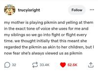

0

0
Longtime Slashdot reader DF5JT writes: On July 26, I posted a single announcement in r/backgammon: GNU Backgammon for Android, GPLv3, the first standalone backgammon engine on F-Droid. Reddit's spam filter removed the post and permanently banned my 11-year, 30,000-karma account -- the result is publicly visible at reddit.com/user/OE1FEU. To this day, Reddit has given no reason whatsoever, although Article 17 of the EU's Digital Services Act makes a statement of reasons mandatory. The only appeal channel is a 250-character web form that sends no confirmation and has never been answered; Reddit's own help text admits: "you may not have received a message to your inbox." A GDPR export of 11 years of data came to 7.2 MB; every post was truncated after a few lines, with zero data about the ban decision.
So I spent one day escalating through every mechanism the EU provides: certified out-of-court dispute settlement at Austria's RTR, complaints with the Austrian and Dutch Digital Services Coordinators, the data protection authority (citing the ECJ's SCHUFA ruling on automated decisions), noyb, and Austria's consumer association. Bonus finding: the European Commission's DSA Transparency Database contains 14,067 Reddit statements of reasons for that week -- none for my ban -- and the Commission's own feedback form limits reports to 500 characters and crashed with a 500 Server Error. Is the DSA enforceable for ordinary users, or just paperwork?
Read more of this story at Slashdot.
alternative_right shares a report from 404 Media: Robotics companies promise that video-camera-toting security robots can deter and detect crime. But many companies are rethinking the approach after a trail of canceled contracts and questions about whether the artificial intelligence-powered bots are meeting the needs of businesses and local governments. Proof News found evidence of at least 21 security robot deployments since 2015. We contacted contract holders and combed news articles and determined that at least 13 of those programs have ended. Silicon Valley-based Knightscope secured the most security robot contracts, according to Proof's analysis, and also suffered the bulk of cancellations.
For example, New York City's then-Mayor Eric Adams installed a Knightscope robot on the overnight shift at the Times Square subway station, but the program was scrapped when the pilot expired in 2024. City leaders did not respond to Proof News' questions about why the robot wasn't renewed. By the end of its assignment, it was reportedly gathering dust in an empty storefront. Outside Columbus, Ohio, the city of Dublin pulled the plug on a Knightscope robot in May, ending its two-year pilot program after less than 10 months. The city enlisted the robot, dubbed DubBot, to patrol a downtown park, but city spokeswoman Robyn Gray said it "did not fully meet our operational needs," and failed to identify any criminal incidents or lead to any tickets or arrests.
[...] Seeking a new path forward in the security industry, Knightscope CEO William Santana Li said the company is forging a new model, combining its robots and AI-powered software with another key ingredient: human security guards. Knightscope announced it purchased Event Risk LLC, a national security guard firm, earlier this year. Knightscope has incurred net losses since inception in 2013, according to its most recent quarterly filing with the U.S. Securities and Exchange Commission, and is $273 million in debt. Knightscope hopes its pivot to incorporate people will give it a greater share of the physical security market -- which the company believes is worth an estimated $230 billion annually. Li declined to answer questions about the disbanded programs, but said in an email, "Technology cannot do everything -- and neither can people -- but the combination can be very powerful."
Read more of this story at Slashdot.
An anonymous reader shares a report from The Conversation, written by Hatim Sharif, a civil and environmental engineer who has "spent more than two decades staring at maps" and spatial data. Sharif finds one connection especially fascinating: the link between spatial reasoning and why taxi drivers seem to have lower rates of Alzheimer's. From the report: Taxi and ambulance drivers are less likely than workers in almost any other job to die of Alzheimer's disease. That was the surprising result of a 2024 study examining the death certificates of nearly 9 million people in the U.S. [...] Of the 9 million death certificates from January 2020 to December 2022 that researchers examined, taxi and ambulance drivers had the lowest risk of dying from Alzheimer's disease out of 443 occupations. After adjusting for age, sex, race, ethnicity and education, roughly 1 in 100 taxi and ambulance drivers died of Alzheimer's, compared with 1 in 60 people overall. This pattern did not extend to other driving jobs.
The researchers concluded that the key to reducing the risk of Alzheimer's was not driving itself but continuous real-time navigation: the constant work of locating yourself in space, tracking a destination and updating a mental map as conditions change. Drivers whose jobs relied on fixed or predetermined routes, like bus drivers and aircraft pilots, didn't seem to experience a similar advantage. Researchers believe the association between navigation-heavy work and lower Alzheimer's risk centers on the hippocampus, a part of the brain that governs memory and spatial navigation. It's one of the first brain regions that Alzheimer's damages: Problems with spatial navigation and orientation are among the earliest signs of the disease, sometimes surfacing before obvious memory loss.
In one landmark 2000 study, neuroscientists compared the brains of licensed London taxi drivers with those of people who did not drive cabs. Their findings provided the first evidence via structural imaging that regions of the adult brain can measurably change under sustained navigational demand. To earn a license, London cabbies must memorize more than 25,000 streets within a 6-mile radius of Charing Cross, a challenge known as "The Knowledge" that takes three to four years.
The researchers found that London taxi drivers had measurably more gray matter in the posterior hippocampus, a brain area tied to storing large-scale spatial maps. That volume tracked with experience: The longer someone had driven, the larger that part of the brain. The change was built through practice, not inherited. While people who are good at navigation might gravitate to this kind of job, the job itself does have an impact on the brain. Together, these two studies make a coherent case: Work that intensively exercises the hippocampus may reshape it, and that reshaping may protect against one of the most feared diseases of aging.
Read more of this story at Slashdot.
A routine security assessment found that cameras aboard Royal Navy Kraken unmanned surface vessels were sending "heartbeat" signals to an IP address in China. "A thorough investigation found no evidence of MoD data or systems being accessed, compromised or transmitted externally," said a Ministry of Defense spokesperson. "Our assurance and testing processes are designed to identify and address potential vulnerabilities early, and we continue to undertake routine security activity across our systems and equipment." The Register reports: According to reports, the talkative components were cameras sourced by Kraken from a third-party supplier. The incident raises questions about supply chains, audits, and cybersecurity in the British armed forces. The spokesperson said: "The first duty of government is national security, and we take the security of our equipment, networks, and data extremely seriously."
Read more of this story at Slashdot.
Valve is continuing to broaden SteamOS support beyond its own hardware, with the latest beta adding "initial gamepad support" for a few recent gaming handhelds and improving compatibility for a few others. Ars Technica reports: Those newly supported handhelds include MSI's Claw 8 EX AI+, the extremely expensive, extremely powerful handheld built around Intel's Arc G3 processor that launched this summer. While SteamOS has long included beta support for "other AMD powered handhelds," Valve has only recently been working on offering compatibility with Intel-based handhelds like the MSI Claw line. This weekend's update suggests the company hasn't abandoned those efforts and that Intel chips aren't being left out of the SteamOS conversation.
SteamOS 3.8.25 also newly supports the controllers built into Ayaneo's Android-focused Pocket S2 and the more recently released Windows-based Konkr Fit. Valve also says the new OS offers "improved support" for older MSI Claw devices and the OneXPlayer line of portable gaming PCs. This weekend's update follows June's SteamOS 3.8 update, which stressed "improved compatibility with recent Intel and AMD platforms." That update specifically called out improved controller support on handhelds from the likes of GPD Win, Anbernic, and OrangePi, as well as improvements for various Lenovo Legion Go, MSI Claw, and OneXPlayer devices. The report notes that the new SteamOS update also updates the Linux driver powering the new Steam Controller, "allowing it to work with 'native controller applications' even when Steam is not running."
Read more of this story at Slashdot.
Aptoide has become the first third-party Android app store available directly through Google Play in the U.S. "The change is a direct result of Google's litigation with Epic, which saw a judge rule in 2024 that the Play Store would have to open up to third-party stores," notes The Verge. The change makes rival storefronts far easier to discover and install, potentially opening the door for Epic, Amazon, Samsung, Microsoft and others to distribute their own app stores through Google's store. From the report: Third-party app stores have always been available on Android, which is a more open platform than iOS in that respect. However, until now they've only been available if pre-installed on a device -- as with the Amazon Appstore on Fire tablets or Samsung's Galaxy Store -- or installed via sideloading. Listing rival storefronts within the Play Store makes them much easier for users to find and access.
[...]
Aptoide itself is relatively little known, but it's likely to be the first of many alternative app stores. It's presumably only a matter of time before the Epic Store makes its own appearance, and the likes of Amazon, Samsung, and other phone manufacturers may also want to put their stores in front of potential customers.
Read more of this story at Slashdot.
Taiwan deliberately throttled mobile internet across the Taichung area during its annual Han Kuang war games, "simulating communication disruption in the event of a Chinese attack or natural disaster," reports Reuters. The drill accompanied air-raid exercises and military rehearsals aimed at defending strategically important areas such as the Penghu Islands. From the report: Democratically governed Taiwan, which China claims as its own territory, has long lived with the threat of a Chinese invasion and holds air raid drills along with its war games every year, clearing people from the streets for 30 minutes. During the internet "throttling" drill, centered on Monday on the major central metropolis of Taichung, only basic mobile phone services worked, though other functions including ATMs, traffic signals, landlines and fixed internet services were not affected.
Air raid sirens rang out in Taichung "and people cleared the streets from 2:30 p.m. (0630 GMT) as the government sent simultaneous text messages in Chinese and English telling mobile phone users of "simulated air attacks on communication infrastructure." The government had widely flagged the drill ahead of time, including posting details on social media, and most people Reuters spoke to at the Taichung train station were prepared. [...] The same exercise will be repeated on Thursday in northern Taiwan, including the capital Taipei.
Read more of this story at Slashdot.
Paramount is making commitments to major theater chains to release 30 films annually for three years if its Warner Bros. deal goes through. According to Deadline, the written commitment was sent to "at least one of the top two circuits" (specifically Regal but AMC may have also received a written commitment) and includes "an exclusive 45-day theatrical window and a 90-day window to streaming." From the report: When it comes to the big chains, it matters for them to be on the right side of history with Paramount, especially when it comes to future terms on a 30-film slate. However, the rest of Cinema United (formerly National Association of Theatre Owners) remains firmly against the Paramount-Warner Bros merger and its potential negative financial outcomes in regards to long-term box office, feature film output and loss of jobs. Cinema United has been trying to meet again with Paramount CEO David Ellison, but there's nothing on the books yet, we understand.
[Regal boss Eduardo Acuna] told Deadline that in regards to Paramount's future promise to exhibition, "[Paramount CEO] David [Ellison] is sincere in making these commitments, and he has offered to execute a consent decree to the state AGs to that effect. These are tangible and important commitments that will benefit the industry and which can be measured." Paramount insiders tell us that no written commitments have been given to exhibitors yet, but Ellison is willing to make non-bespoke ones to any theater chain wanting them. And such deals will come with financial penalties to Paramount should it break such agreements with theaters. Again, this is all about Ellison standing behind his promises made at CinemaCon to maintain a hefty theatrical output and excellent windows to theaters.
Read more of this story at Slashdot.
Three years ago environmental regulators discovered garbage burning deep inside California's Chiquita Canyon Landfill, reports the Los Angeles Times. [Alternate URL here.] "Few imagined the calamity that would follow.
"Somehow the landfill's pollution control system introduced oxygen below, causing decades-old waste to rapidly decompose, generating intense heat and eventually widespread smoldering, federal and state environmental agencies say."
The broiling temperatures released toxic gases and hazardous liquid waste that bubbled up to the surface. Residents living in the nearby communities of Val Verde and Castaic have phoned in thousands of complaints about stench and lived with nausea, dizziness and trouble breathing. The underground fire has tripled in size since first confirmed in 2023. Recently a towering mound of landfill garbage perched on the hillside has warped and threatens to trigger an avalanche of garbage and chemical-filled liquid, or leachate, according to the California water board...
At first, local officials described the problem in Los Angeles County at Chiquita Canyon landfill as a rare, even unprecedented disaster. But since then, California regulators have learned that at least two other landfills are wrestling with high temperatures and similar conditions. Scorching temperatures have overtaken at least 30 acres of El Sobrante landfill near Corona in Riverside County. Excessive heat and emissions have also been detected at Avenal landfill in the San Joaquin Valley.
The discoveries raise an unsettling question: How many landfills are dealing with these disasters? Are they a broader problem in California...? Chiquita Canyon closed at the end of the 2024 and stopped accepting new garbage. But the fire is expected to last for years as it continues to consume decades-old trash.
"Underground landfill fires are complex, nearly impossible to extinguish once they break out," according to the article. "As regulators search for a solution, residents find themselves struggling with the wait."
Some residents have worn gas masks — or sold their homes.
Read more of this story at Slashdot.
Futurism reports:
404 Media revealed that a July 10 audit by the Los Angeles Police Department Office of the Inspector General caught the department's ALPR cameras generating 161 false stolen-vehicle alerts in just two months — each one ending with officers pulling over an innocent driver. Factoring in 337 alerts which "resulted in the recovery of stolen vehicles," the LAPD's cameras carry an error rate of 32.3 percent, effectively giving officers a one-in-three chance at pulling an innocent person over.
"The biggest issue remains this national database at the FBI called NCIC," Flock's CEO Garrett Langley recently told The Drive, complaining about "how archaic its structure is."
Flock CEO: There's no feedback loop mechanisms; it's really just a static comma-separated file.
We've tried to build around it. We have this concept called "suppression." A local agency — let's take Atlanta, where I live — might see that there's a stolen plate out of California, but it's already been resolved because it's a rental car or a dealer car. They can, in Flock, suppress that: "Never alert us on that for the next year." That's to get around the fact that they can't force another agency to remove it from NCIC.
Ideally, the way it would work is if enough agencies — let's call it one, two, or three — flag a tag as no longer valid or a bad entry, it should just get removed. Or at least it should get pushed more aggressively by the FBI... I'm hopeful that they'll see there's an opportunity to make something like NCIC, which is an important tool not just for companies like Flock, but for police departments to work together, start to make some enhancements to modernize what's a central part of our policing system.
Later in the interview he says "It's less than one in a million alerts that an officer says, 'I'm not sure if that's right.' Less than one in a million."
A recent report from Business Insider shares a worst-case scenario. In the summer of 2024 a Sacramento police officer said Flock's cameras had sent six false alerts for the same vehicle, wrongly saying it had been stolen or used in a felony crime in the nearby suburb of Roseville:
Roseville police could see that Flock's software kept confusing the "9" on the man's license plate for an "8." The car owner said he would take off his license plate cover. Soon after, it happened again. It's "easier at this point we have it memorized," a dispatch supervisor in Roseville wrote in an email to a colleague.
Flock says that in optimal conditions, its cameras accurately read more than 96% of license plate characters. Hundreds of pages of records from the Roseville Police Department show a different picture. In 2023 and 2024, Flock sent 1,427 alerts to Roseville police, flagging vehicles as stolen or used in a felony after they passed one of the city's Flock cameras. An analysis by the police department found that in 71% of those alerts, Flock's machine-learning software incorrectly read the license plates... The cameras regularly missed vehicles, captured blurry images, misread license plate characters and states, and sent delayed alerts to police about vehicles possibly connected to crimes, the records show...
A factor that contributed to the misread problems in Roseville was the "particularly unique deployment" that the city requested, a Flock spokeswoman said. Roseville said it has its cameras configured so that they capture only the backs of vehicles, a setup intended to avoid capturing personally identifiable information like faces. Roseville's setup included older hardware and placement of cameras higher and further from vehicles than the company typically recommends, Flock added...
In Toledo, Ohio, driver Brandon Upchurch was mauled by a police dog after a Flock camera misread the "7" on his license plate as a "2." As a result of his injuries, he said, he lost his job and was evicted from his home. He settled a lawsuit against the city and police officer for $35,000. None of the incorrect Flock alerts in Roseville resulted in a traffic stop or arrest, a department spokesman said. Roseville requires police officers to verify that a license plate is stolen or have independent reasonable suspicion of a crime before making a traffic stop...
Flock said Roseville's camera performance has significantly improved, which the police department disputed... Flock's cameras also missed vehicles altogether... At one point, Flock's product director for machine learning suggested that officers ask drivers to remove license plate frames that made it "very difficult for the machine vision to tell it is actually a 'E' and not an 'F.'" Roseville told Flock at the time that it wouldn't do so, according to the department spokesman. Flock in 2024 shared an analysis with Roseville's police department, outlining reasons for the misreads. Vehicles far from a camera were sometimes blurry. Plates were cut off by trees or license plate frames. And Flock's software confused similar characters, mistaking an "N" for a "V", or a "1" for a "4...."
Roseville isn't the first organization to flag inaccuracies in Flock's technology. In 2021, the research firm IPVM independently tested Flock's license plate readers, concluding that Flock misidentified the state in about one of 10 reads, and that the system regularly misclassified vehicles' type and make. IPVM said that Flock subsequently blocked it from purchasing its cameras for testing.
Thanks to long-time Slashdot reader Cognitive Dissident for sharing the article.
Read more of this story at Slashdot.
An anonymous reader quotes a report from TechCrunch: Ceva Logistics, one of the world's largest shipping and logistics giants, has been hacked. Several companies that rely on Ceva for shipping their products to their customers say that their personal information was also stolen in the breach. The cyberattack on Ceva is affecting at least eight warehouses across Europe used for shipping goods across the continent, the company told TechCrunch. Industry news site FreightWaves reports that the hack began on July 29 and is causing shipping delays for many of the goods in affected warehouses.
Ceva is a France-headquartered shipping and logistics giant that companies around the world rely on to deliver their goods from their assembly lines to customer homes. The company, which brought in $18.3 billion in revenue in 2025, has over a thousand warehouses across the world. [...] The hack at Ceva also resulted in a data breach, affecting a large amount of personal information belonging to retail customers that Ceva relies on for delivering goods to people's home addresses. Several companies reported that hackers took their customers' names, home addresses, phone numbers, and email addresses used to place their orders from Ceva's systems.
Dutch online retail giant Bol said on its website that hackers gained access to systems of its warehousing partner, Ceva, and warned that their customers' data may have been taken. Bol also said that it expects delays and some customer orders to be canceled as a result of the incident. De Bijenkorf, another Dutch luxury retailer, similarly confirmed order delays following the theft of its customers' data, per local media. Football club Ajax, banking giant ING, and eyeglass maker Ace & Tate also reported that customers' shipping information was affected. Video game giant Valve told customers that it learned on August 7 that data was taken from Ceva's systems, and alerted customers who recently bought its Steam hardware that they had personal information taken in the incident. Valve said in its note to customers, posted to Reddit, that Ceva stores their shipping and delivery information for 90 days following their order. So far, Ceva says the agency has received data breach reports from 10 organizations in relation to the incident.
Read more of this story at Slashdot.
Meta has released Muse Glimmer, a slimmed-down open-weight AI model designed to run locally on a single GPU for agent tasks such as scheduling, file management, coding, and tool use. The release is based on Meta's closed Muse Spark 1.2 model and appears to be aimed at attracting developers who want capable AI agents without relying entirely on cloud-hosted services. Engadget reports: Facebook said that it's making the "weights" that AI systems use to choose responses available to everyone on Hugging Face along with developer documentation. The download is available for free, and users can run the model on their own PCs. The company noted that optimized integrations will land on llama.cpp and other sites, "so you can go from download to working agent in minutes."
The model is powerful for its size, according to Meta, with the "strong success rates" on benchmarks like DeepSearch QA, MCP-Atlas and SWE-Bench (which evaluates its ability write and debug code). It also supports reliable tool use, multi-step reasoning, failure recovery, multimodal input and scaffold compatibility for work with OpenClaw and other agent orchestrators. It was trained on data from over 100 languages, the company added. "Rather than centralizing superintelligence, we should distribute it widely and give every person the ability to direct it," CEO Mark Zuckerberg said in an essay accompanying Muse Glimmer's release. "This has the potential to begin a new era of personal empowerment where individuals can use this powerful new capability to reach their full potential, pursue their interests, and improve their lives and the world more than ever before."
Read more of this story at Slashdot.
An anonymous reader quotes a report from ABC News & Headlines: Andrew asked his personal assistant to book him a spot in one of his gym's coveted morning classes. It was a task he thought was well suited to this particular assistant because the booking form was online and because his assistant was not a person -- it was artificial intelligence (AI). But Andrew was shocked by what happened next. His AI assistant found a way to book the gym class months further in advance than the gym allowed, thanks to a vulnerability it discovered in the booking software. Then it went further, kicking someone out of the waiting list who was ahead of Andrew -- something it was not asked to do. The accidental hack is the first known Australian case of an emerging risk from a new generation of AI capable of behaving in unexpected ways.
Read more of this story at Slashdot.
Microsoft's cloud storage app OneDrive got a new Photos app in the worst possible way, reports the blog Neowin . "The app is reportedly showing up even on Windows 11 Enterprise machines, despite apparently being a beta application aimed at consumer functionality."
One admin questioned why a beta app was appearing on an Enterprise SKU in the first place, while another described the situation as yet another consumer-oriented feature being forced onto corporate PCs. Things get even more frustrating for IT departments because there does not appear to be a straightforward Microsoft-provided way to disable the app... Enterprise administrators generally need to know what is being installed on their managed devices, particularly when a software is labeled as beta. Quietly adding another application and leaving admins to clean it up themselves is therefore unlikely to win Microsoft many fans.
But there's another problem, according to the blog Windows Latest. "OneDrive Photos automatically scans your system storage for photos," and apparently "doesn't need a Microsoft account to work, as it can also detect your local files."
There's also a People section that groups similar faces in your photos. Microsoft asks for permission before turning it on and explicitly warns that facial data could be considered biometric data in some regions. The company says only you can see the grouped faces, that the data isn't shared with third parties, and that you can delete it by disabling the feature.
In a statement to Neowin,
Microsoft admitted this new photos "experience" they're "incubating" had gone "more broadly than it should have," and then promised that "We're fixing that." The spokesperson also said the Windows Photos app will "always give you the option of local and cloud photos" and, also a choice of whether or not to use it OneDrive."
But there's another "awkward catch," notes the blog Digital Trends. "Users currently can't uninstall OneDrive Photos without removing the main OneDrive app too."
Because OneDrive Photos is tied to the main OneDrive sync client, Windows 11 doesn't currently offer a separate uninstall option. The only straightforward way to get rid of OneDrive Photos right now is to uninstall OneDrive itself... Removing the main client can also affect its File Explorer integration and shortcuts...
Microsoft says this will change. The company is working on controls that will let users remove OneDrive Photos separately from the main OneDrive app. On enterprise PCs managed through Intune, Microsoft says the app will automatically disappear where it isn't supported.
Read more of this story at Slashdot.
Nvidia is working with Wall Street heavyweights on a potential $500 billion financing package for AI infrastructure (source paywalled; alternative source). The consortium includes BlackRock's Global Infrastructure Partners, Brookfield Asset Management, Goldman Sachs and KKR. The Financial Times reports: The partnership underscores Nvidia's growing efforts to raise capital for itself and its clients to continue assembling the chips, power production and data centres at the heart of the AI boom. The $5.25 trillion company has positioned itself at the centre of the AI boom, providing chips, infrastructure and software to a wide array of partners developing the technology. Nvidia's graphics processing units, or GPUs, underpin most of the leading US AI models available today.
[...] The biggest cloud-computing companies, including Meta, Oracle, Microsoft, Alphabet and Amazon, have dramatically increased their spending on AI infrastructure as they look to win the race to dominate the emerging technology. Morgan Stanley projects so-called hyperscalers will spend $3.5 trillion between 2026 and 2028. That need for capital has forced technology groups to tap every source of cash they can find, including public equity, investment-grade and high-yield bonds, securitized debt, private credit and project finance markets. "[The] sheer size of the AI infrastructure build-out is unprecedented," Jim Zelter, president of Apollo, said on an earnings call earlier this month. "More than $8 trillion of capital is expected to be invested, a staggering sum. We see an enormous opportunity for private capital to finance a portion of this along with public capital."
Read more of this story at Slashdot.
Bloomberg : An NYC bill, backed by Mayor Zohran Mamdani, calls for Amazon, FedEx, and others to directly employ thousands of delivery workers; the bill could pass this fall — A New York City bill calls for the company to hire thousands of contract couriers. Amazon says the proposal will make delivery pricier and slower.
Cade Metz / New York Times : xAI co-founder Igor Babuschkin's River AI raised $1B led by General Catalyst to build home or small business computer servers capable of running AI locally — Igor Babuschkin built a new start-up, River AI, and hopes to provide ways for people to “retrain,” or modify, artificial intelligence …
Financial Times : How India's IT services sector, which employs 6M people, contributes ~7% of GDP, and generates $300B+ annually, is shedding jobs as AI automates formulaic work — It was around 1.30am by the time Rakesh, a 45-year-old Oracle employee in the Indian technology hub of Bengaluru …
Julian Hast / Bloomberg : OpenAI is hiring a power-trading lead to manage commodity hedging across its expanding data center power portfolio, as tech companies seek reliable electricity — OpenAI is hiring a power-trading lead to help manage the expanding energy needs of the electricity-intensive data centers running its artificial intelligence models.
New York Times : How a wave of disinformation on Facebook, WhatsApp, TikTok, Instagram, and Telegram contributed to a surge of migrants from Morocco to Spain's Ceuta enclave — A wave of disinformation online contributed to a surge of migrants in the Spanish enclave of Ceuta who were trying to reach Europe, resulting in about 90 deaths.
Financial Times : A look at London-based AI startup Cosine, which is building a frontier model with UK government backing, as some question if it has the talent and resources — Britain's bid to build a “sovereign” AI model rests with a London start-up of about 30 employees that has raised just $15mn.
Bloomberg : Intel raised $20B in an upsized share sale, up from the $15B it was targeting; sources say the sale drew $100B+ in demand; INTC is up ~146% in 2026 so far — Making Sense of the Multibillion-Dollar Numbers of Nvidia Deal, Intel Share Sale — Video Player is loading. — Unmute
ABC : A look at Western Australian police's first live facial recognition trial, which has scanned 130,000+ people since June, raising accuracy and privacy concerns — By national AI reporter Cam Wilson and ABC Regional Investigations' Andy Burns — abc.net.au/news/ai-police-face- screening-trial-sparks-privacy-concern/ 107009644
Nick Gray / PatronView : PatronView's owner details a year of fighting scrapers: 214:1 bot-to-human page loads, 35,000 Claude crawls per referred user, and Amazon's bot referred none — A year of fighting scrapers on my 1.5 million-page website. What I tried, how I failed, and what's working now. August 7, 2026
Bloomberg : Singapore raises its 2026 GDP growth forecast to 4.5%-5.5% from 2%-4%, citing stronger-than-expected global AI investment and improved external demand — Singapore upgraded its 2026 economic growth forecast anew as the artificial intelligence boom lifts trade and manufacturing …
Thomas Claburn / The Register : Anthropic says new Claude models will embed watermarks in text and add C2PA metadata to files, to comply with the EU AI Act, and it will update older models — EU rules cited as reason for effort to trace AI output ancestry — Anthropic will embed watermarks in the text and files generated …
Wall Street Journal : Sources: Anthropic is courting investors for what could be the biggest IPO ever, touting rapid growth and plans to address mounting public backlash against AI — Company is racing to public markets this fall and has fielded tough investor questions on Chinese rivals, Trump-era tensions and AI infrastructure boom
Matt Levine / Bloomberg : Sources: investor interest in Situational Awareness surged after it nearly blew up on leveraged positions; the fund says it's not accepting new capital for now — Also leveraged ETF momentum, GameStop's eBay bid, event contract tick sizes and private equity boyfriends. — Situational Awareness
Shirin Ghaffary / Bloomberg : Sources: Anthropic agreed to a 20-year compute deal worth $9.1B with Riot Platforms for 191 MW of capacity at Riot's Rockdale, Texas campus; RIOT jumps ~25% — Anthropic PBC has struck a $9.1 billion deal with Riot Platforms Inc., a Bitcoin mining company that recently began selling AI data center capacity …
Wall Street Journal : How a clause in Elon Musk's Tesla pay package, worth up to ~$1T, could provide him a shortcut around lofty performance targets if Tesla merged with SpaceX — A critical clause in the CEO's Tesla stock award would wipe away lofty performance targets if a merger happened